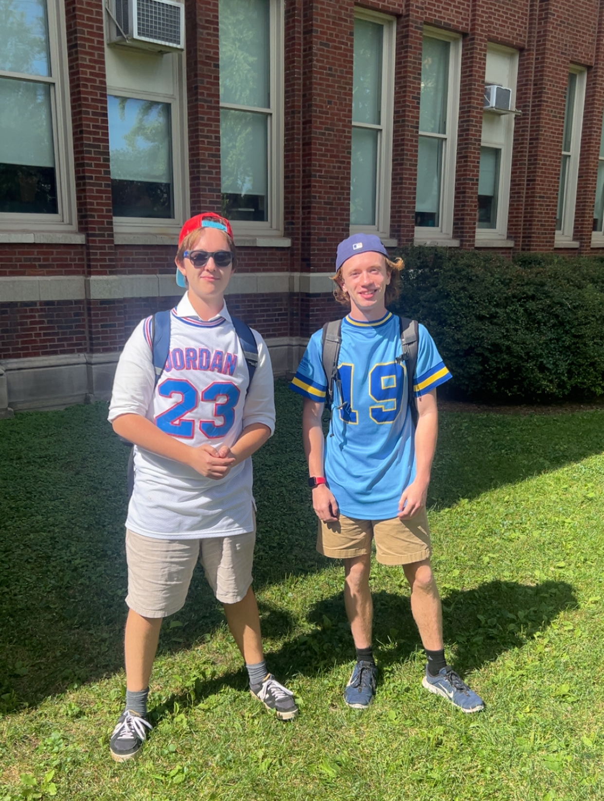

Your Chairs
Jack Kochowicz & Isaac Dunn
Hi delegates!
My name is Jack Kochowicz, and I’m a senior at Lane Tech. This is my fourth year doing Model UN, and I’m very excited to chair for the first time! I am an avid Chicago sports fan, particularly of the Bears, President of the High School Democrats Chapter at Lane, and rubber duck collector.
While I can’t disclose any information about our committee, rest assured that we will be winning bigly, more than any committee ever has ever before. Thank you for your attention to this matter.
If you have any questions or concerns, please do not hesitate to email me. Sometimes the most exciting part of my day is checking my school email, so I will respond to you, however sad that sounds. Thank you, and I’m looking forward to seeing you at LTMUN this year.
Hi, my name is Isaac Dunn and I'm a senior at Lane Tech. This is my second year doing Model UN, and first time chairing (with my beautiful double del). Outside of Model UN, I'm a member of our robotics team and a big Cubs fan. I’m very excited to see you at our conference this year!